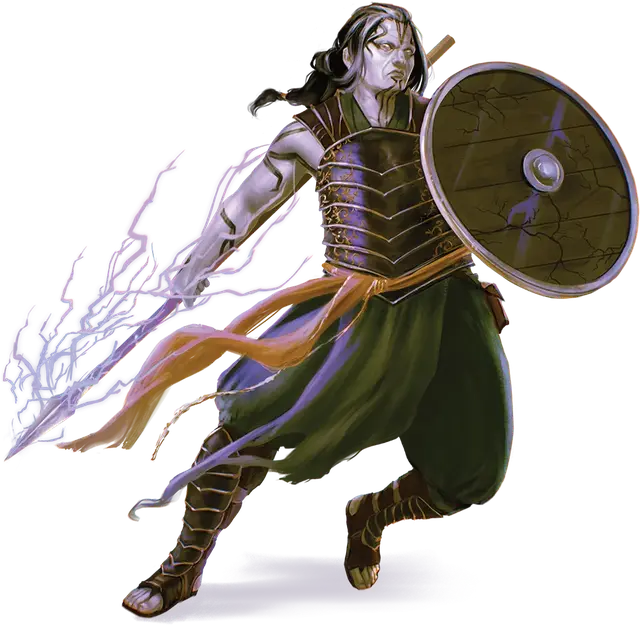

Голиаф потомок великана
Goliath Giant-Kin
Средний Гуманоид, любое мировоззрение

Класс Доспеха 18 (полулаты, щит)
Хиты 67 (9к8 + 27)
Скорость 30 футов
| мод | спас | ||
|---|---|---|---|
| СИЛ | 18 | +4 | +4 |
| ЛОВ | 13 | +1 | +1 |
| ТЕЛ | 16 | +3 | +3 |
| мод | спас | ||
|---|---|---|---|
| ИНТ | 10 | +0 | +0 |
| МДР | 12 | +1 | +1 |
| ХАР | 12 | +1 | +1 |
Навыки Атлетика +6, Восприятие +3, Выживание +3
Сопротивление урону холод
Чувства пассивное Восприятие 13
Языки Общий, Великаний
Опасность 3 (700 опыта)
Бонус мастерства +2
Действия
Мультиатака. Голиаф совершает две атаки Копьем.
Копьё. . Рукопашная или дальнобойная атака оружием: +6 к попаданию, досягаемость 5 футов или дистанция 20/60 футов, одна цель. Попадание: 7 (1к6 + 4) колющего урона или 8 (1к8 + 4) колющего урона, если используется двумя руками для атаки в рукопашном бою.
Бонусные действия
Удары великана (перезарядка 5-6). До конца своего хода каждая рукопашная атака голиафа дополнительно наносит 7 (2к6) урона типа, определенного кланом великана голиафа: холод (ледяной великан), огонь (огненный великан), силовое поле (каменный великан), электричество (штормовой великан), колющий (холмовой великан) или звук (облачный великан).
Описание
Мало что приводит меня в такой восторг, как голиафы, которые стремятся отметить свою связь с величественной историей великанов. Когда они поют мне гимны, их голоса звучат сладостно.
- ДИАНКАСТРА
Голиафы — гуманоиды, находящиеся в отдаленном родстве с великанами. Пропитанные сверхъестественной сущностью горного дома своих предков, голиафы обладают достаточной силой и стойкостью духа, чтобы заслужить уважение великана. Общества голиафов, которые живут в тесных отношениях с великанами, подражают им и признаются великанами как родственники. Эти голиафы, потомки великанов часто выступают в качестве связующих звеньев между кланами великанов и другими гуманоидами.
Хотя они редко достигают более 8 футов в высоту, голиафы могут посоревноваться в силе с ограми. Голиафы, потомки великанов также могут направлять магию своих сородичей-великанов в мощные рукопашные атаки.
Хотя они и не являются частью Уложения, голиафы, потомки великанов часто почитают божественных предков великанов, испытывая особую привязанность к дочерям Аннама: Дианкастре, Хьяте и Яланис. Они также склонны превозносить те же достоинства, что и великаны, с которыми они живут бок о бок, поэтому голиафы, потомки великанов, живущие рядом с ледяными великанами, хвастаются своей мощью, в то время как те, кто живет с каменными великанами, ценят артистизм.